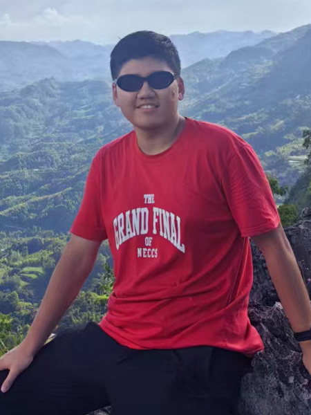

 |
我是桂林电子科技大学人工智能学院硕士研究生，师从Ahmad Chaddad 教授。我于2022年开始从事人工智能研究，并长期与加拿大蒙特利尔高等技术学院（Christian Desrosiers 教授，2023-2024）、沙迦大学（Ahmed Bouridane 教授，2022-2023）以及塔伊巴大学（Tareef Daqqaq 教授，2023至今）保持紧密合作。 我的研究兴趣主要包括😎😎😎: 我是 AAAI、IJCAI、The Web Conference (WWW)、KDD、ACM MM 等多个国际会议的程序委员会成员，并担任 IEEE TMI、Information Fusion、Pattern Recognition、IEEE T-IFS 等多个期刊的审稿人。目前已发表论文 20 余篇，包含多个 CCF-A 类会议与期刊（Google Scholar 引用 950+，H 指数 9，i10 指数 8）。 |
2024.09 ~ 2027.06: 桂林电子科技大学, 人工智能学院, 硕士 [排名: 1/35]
2020.09 ~ 2024.06: 桂林电子科技大学, 人工智能学院, 学士 [排名: 2/78]
2026.03 ~ 2026.08: 中山大学, 访问研究生 [导师: 💁♂️陈川教授👍]
• 与中山大学中山眼科中心合作，研发联邦眼科疾病诊断系统。
• 贡献两篇论文（一作 1 篇 + 二作 1 篇）。
2026.01 ~ 2026.03: 中国移动"梧桐鸿鹄"冬季科研实习生项目, 科研实习生（线上）
• 研发轻量化脑电（EEG）异常信号检测模型。
• 获中国移动（杭州）信息技术有限公司校园招聘绿色通行证。
2025 ~ 2026: 面向医疗应用的个性化联邦学习
支持方: 桂林电子科技大学研究生教育创新项目 (Grant No. 2025YCXS244)
角色: 项目负责人; 经费: 5,000 元
2023 ~ 2024: 面向医疗应用的联邦学习
支持方: 国家级大学生创新创业训练计划 (Grant No. 202310595083)
角色: 项目负责人; 经费: 20,000 元
Federated CLIP for Resource-Efficient Heterogeneous Medical Image Classification
Yihang Wu, Ahmad Chaddad*
Proceedings of the AAAI Conference on Artificial Intelligence (AAAI'26), 2026.
[CCF-A 会议]
FedENC: Federated Adaptive CLIP Model via Energy Alignment and Neural Collapse
Yihang Wu, Ahmad Chaddad*, Sarah A. Alkhodair
International Joint Conference on Artificial Intelligence (IJCAI'26), 2026.
[CCF-B 会议]
FedImageCLIP: Adapting CLIP in Heterogeneous Federated Learning via Joint Local Classifiers and Mutual Learning
Yihang Wu, Ahmad Chaddad
Pattern Recognition, 2026.
[CCF-B 期刊]
FedCLIPOT: Federated CLIP Model via Parameter Reusing and Optimal Transport
Yihang Wu, Ahmad Chaddad*, Sarah A. Alkhodair, Tareef Daqqaq, Reem Kateb
Information Fusion, 2026.
Dynamic Personalized Federated Learning with Adaptive Weighted Fusion
Ahmad Chaddad*, Yihang Wu, Yan Hu, Tareef Daqqaq, Lihe Jiang
IEEE Internet of Things Journal, 2026.
[CCF-C 期刊]
Federated Vision Transformer with Adaptative Focal Loss for Medical Image Classification
Xinyuan Zhao†, Yihang Wu†, Ahmad Chaddad*, Sarah A. Alkhodair, Reem Kateb
Knowledge-Based Systems, 2026.
[CCF-C 期刊]
MoE-Based Context-Aware Gaze Estimation with CLIP and Multiscale Transformer
Xinyuan Zhao†, Yihang Wu†, Ahmad Chaddad*, Sarah A. Alkhodair, Reem Kateb
Knowledge-Based Systems, 2026.
[CCF-C 期刊]
Federated Learning: A Systematic Analysis of Deep Learning Algorithms for Healthcare Applications
Ahmad Chaddad*,†, Yihang Wu†, Yan Hu†, Tareef Daqqaq, Yousef Katib, Sarah A. Alkhodair, Reem Kateb
Neurocomputing, 2026.
[CCF-C 期刊]
Masked ViTFL: A Vision Transformer with Learnable Sparse Masks for Federated Image Classification
Xinyuan Zhao†, Yihang Wu†, Ahmad Chaddad†, Tareef Daqqaq, Reem Kateb
Information Sciences, 2026 (已录用).
A Knowledge Distillation-Based Approach to Enhance Transparency of Classifier Models
Yuchen Jiang†, Xinyuan Zhao†, Yihang Wu, Ahmad Chaddad†,*
Proceedings of the AAAI Conference on Artificial Intelligence (AAAI'25), 2025.
[CCF-A 会议]
FAA-CLIP: Federated Adversarial Adaptation of CLIP
Yihang Wu, Ahmad Chaddad*, Christian Desrosiers, Tareef Daqqaq, Reem Kateb
IEEE Internet of Things Journal, 2025.
[CCF-C 期刊]
Impact of Domain Adaptation in Deep Learning for Medical Image Classifications
Yihang Wu†, Ahmad Chaddad*,†
IEEE International Conference on Systems, Man, and Cybernetics (SMC'25), 2025.
[CCF-C 会议]
Deep Modeling and Optimization of Medical Image Classification
Yihang Wu, Muhammad Owais, Reem Kateb, Ahmad Chaddad*
IEEE 22nd International Symposium on Biomedical Imaging (ISBI'25), 2025.
Semi-Supervised Medical Image Segmentation via Dual Networks
Yunyao Lu, Yihang Wu, Reem Kateb, Ahmad Chaddad*
IEEE 22nd International Symposium on Biomedical Imaging (ISBI'25), 2025.
Analyzing the Calibration of CLIP Models Under Noisy Data Conditions
Yuxin Gao†, Yihang Wu†, Ahmad Chaddad*
IEEE International Conference on Systems, Man, and Cybernetics (SMC'25), 2025.
[CCF-C 会议]
Performance Evaluation of the CLIP Model in Classification Tasks
Yuxin Gao†, Baosheng Qin†, Fenglian Chen†, Xiaohan Huang†, Jiajun Wu†, Yihang Wu†, Ahmad Chaddad*,†
IEEE International Conference on Systems, Man, and Cybernetics (SMC'25), 2025.
[CCF-C 会议]
Deep Modeling and Interpretation for Bladder Cancer Classification
Ahmad Chaddad*,†, Yihang Wu†, Xianrui Chen†
IEEE International Conference on Systems, Man, and Cybernetics (SMC'25), 2025.
[CCF-C 会议]
Domain Adaptation Techniques for Natural and Medical Image Classification
Ahmad Chaddad*,†, Yihang Wu†, Reem Kateb, Christian Desrosiers
Information Sciences, 2025.
[CCF-B 期刊]
Enhancing Dual Network Based Semi-Supervised Medical Image Segmentation with Uncertainty-Guided Pseudo-Labeling
Yunyao Lu†, Yihang Wu†, Ahmad Chaddad*,†, Tareef Daqqaq, Reem Kateb
Knowledge-Based Systems, 2025.
[CCF-C 期刊]
Simulations of Common Unsupervised Domain Adaptation Algorithms for Image Classification
Ahmad Chaddad*, Yihang Wu, Yuchen Jiang, Ahmed Bouridane, Christian Desrosiers
IEEE Transactions on Instrumentation and Measurement, 2025.
Generalizable and Explainable Deep Learning for Medical Image Computing: An Overview
Ahmad Chaddad*,†, Yan Hu†, Yihang Wu†, Binbin Wen†, Reem Kateb†
Current Opinion in Biomedical Engineering, 2025.
期刊高被引论文 (Top Cited Paper)
Classification Based Deep Learning Models for Lung Cancer and Disease Using Medical Images
Ahmad Chaddad*,†, Jihao Peng†, Yihang Wu†
IEEE Transactions on Radiation and Plasma Medical Sciences, 2025.
Towards a Transparent and Interpretable AI Model for Medical Image Classifications
Binbin Wen, Yihang Wu, Tareef Daqqaq, Ahmad Chaddad*
Cognitive Neurodynamics, 2025.
FACMIC: Federated Adaptative CLIP Model for Medical Image Classification
Yihang Wu, Christian Desrosiers, Ahmad Chaddad*
International Conference on Medical Image Computing and Computer-Assisted Intervention (MICCAI'24), 2024.
[CCF-B 会议]
Federated Learning for Healthcare Applications
Ahmad Chaddad*, Yihang Wu, Christian Desrosiers
IEEE Internet of Things Journal, 2024.
[CCF-C 期刊]
Enhancing Classification Tasks through Domain Adaptation Strategies
Ahmad Chaddad*, Yihang Wu
IEEE International Conference on Bioinformatics and Biomedicine (BIBM'23), 2023.
[CCF-B 会议]
Domain Adaptation in Machine Learning: A Practical Simulation Study
Ahmad Chaddad*, Yihang Wu
IEEE 35th International Conference on Tools with Artificial Intelligence (ICTAI'23), 2023.
[CCF-C 会议]
Building a Better Metaverse: How Federated Learning is Revolutionizing Virtual Worlds
Ahmad Chaddad*, Yihang Wu, Reem Kateb
IEEE International Conference on E-health Networking, Application & Services (HealthCom'23), 2023.
A Practical Simulation for Domain Adaptation Models
Ahmad Chaddad*, Yihang Wu
IEEE International Conference on E-health Networking, Application & Services (HealthCom'23), 2023.
Electroencephalography Signal Processing: A Comprehensive Review and Analysis of Methods and Techniques
Ahmad Chaddad*, Yihang Wu, Reem Kateb, Ahmed Bouridane
Sensors, 2023.
邀稿论文 (Invitation Paper)
2026: 硕士研究生国家奖学金, 桂林电子科技大学 [链接]
2026: KDD 2026 杰出审稿人 (Outstanding Reviewer) [8月轮次排名前 10%]
2026: IJCAI 2026 铜牌审稿人 (Bronze Tier Reviewer) [注册费 75 折]
2026: AAAI-26 奖学金与志愿者奖 (Scholarship & Volunteer Award) [主办方提供 1000 美元 + 免费注册]
2026: 人工智能学院优秀研究生, 桂林电子科技大学 [链接]
2025: KDD 2025 优秀审稿人 (Excellent Reviewer) [2月轮次排名前 25%] [链接]
2025: AI+ 创新大会一等奖, 广西人工智能学会, 桂电南宁研究院 [链接]
2025: 学术之星, 桂林电子科技大学 [链接]
2025: 研究生三等学业奖学金, 桂林电子科技大学 [链接]
2023: 自强之星, 桂林电子科技大学 [链接]
2022: 国家励志奖学金, 桂林电子科技大学 [链接]
2022: 人工智能学院一等学业奖学金, 桂林电子科技大学 [链接]
KDD; IJCNN; MICCAI; ACM MM; IEEE SMC; IJCAI
AAAI; The Web Conference (WWW)
Information Fusion; Pattern Recognition; IEEE Transactions on Information Forensics and Security; IEEE Transactions on Medical Imaging; IEEE Internet of Things Journal; Knowledge-Based Systems; Information Sciences; Neurocomputing; Scientific Reports
2025: 人工智能基础, 助教, 桂林电子科技大学
2025: 计算机视觉, 助教, 桂林电子科技大学
2024 ~ 2025: 数字信号处理, 助教, 桂林电子科技大学
2024 ~ 2025: 数字图像处理, 助教, 桂林电子科技大学
膀胱癌 MRI 分类数据集 (多中心, 2D), 2025
• 面向多中心医学图像分类任务完成数据的预处理与重新设计（2D 图像）。
• [2,100+ 浏览, 240+ 下载]
• 被多项已发表研究使用，包括 EBCDFFE-HRLM、BladderViT 与 BladderYoLo。